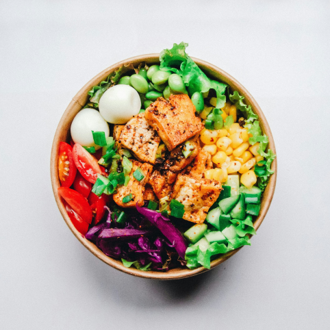
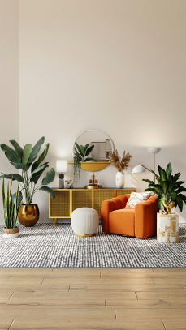

<article>
  <h2>Kabar Terbaru</h2>
</article>
<aside>
  <h2>Kabar Populer</h2>
  <div class="news__buttonContainer">
    <button><a href="#">Lihat Selengkapnya</a></button>
  </div>
  <!-- news 1 -->
  <div class="news__container flex">
    
    <div class="news__titleNews">
      <p>Kiamat Web Developer sudah dekat?</p>
      <p>
        Devin AI akhir-akhir meresahkan para programmer baru ataupun calon
        lulusan mahasiswa IT. Namun terdapat beberapa tips supaya kamu tidak
        tergantikan oleh Devin AI.
      </p>
      <div class="flex justify-between">
        <p>Oleh : Wahyu Ramadhan</p>
        <p>5/5/2024</p>
      </div>
    </div>
  </div>
  <!-- news 2 -->
  <div class="news__container flex">
    
    <div class="news__titleNews">
      <p>Tidur cukup meningkatkan produktivitas</p>
      <p>
        Berikut ini merupakan beberapa tips untuk anda yang kesulitan membagi
        waktu untuk tidur. Sebagai seorang developer anda harus memiliki waktu
        tidur yang cukup
      </p>
      <div class="flex justify-between">
        <p>Oleh : Wahyu Ramadhan</p>
        <p>6/5/2024</p>
      </div>
    </div>
  </div>
  <!-- news 3 -->
  <div class="news__container flex">
    
    <div class="news__titleNews">
      <p>Mulai makan makanan sehat 4 sehat 5 sempurna dari sekarang</p>
      <p>
        Sebuah tubuh harus memilki asupan yang seimbang untuk menjaga stabilitas
        kondisi fisik yang optimal. Berikut terdapat beberapa makanan
        rekomendasi dari Media Wiracarita.
      </p>
      <div class="flex justify-between">
        <p>Oleh : Hendi Suhendi</p>
        <p>7/5/2024</p>
      </div>
    </div>
  </div>
  <!-- news 4 -->
  <div class="news__container flex">
    
    <div class="news__titleNews">
      <p>Tips desain interior untuk anda yang mudah bosan</p>
      <p>
        Bosan dengan tata letak yang monoton? ingin mencoba tata letakbaru untk
        barang-barang anda, berikut rekomendasi tata letak barang untuk rumah
        cantik anda dari Media Wiracarita.
      </p>
      <div class="flex justify-between">
        <p>Oleh : Amirul</p>
        <p>7/5/2024</p>
      </div>
    </div>
  </div>
</aside>
